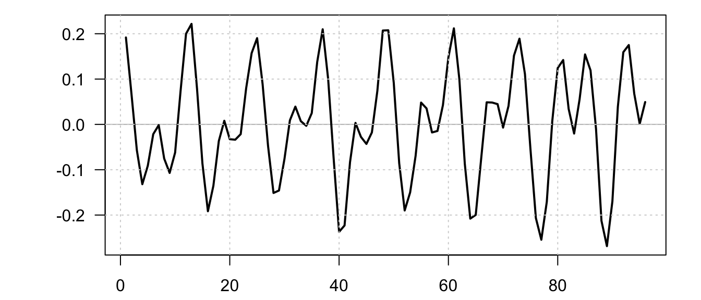
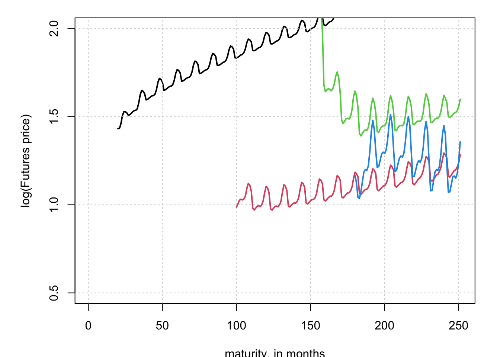
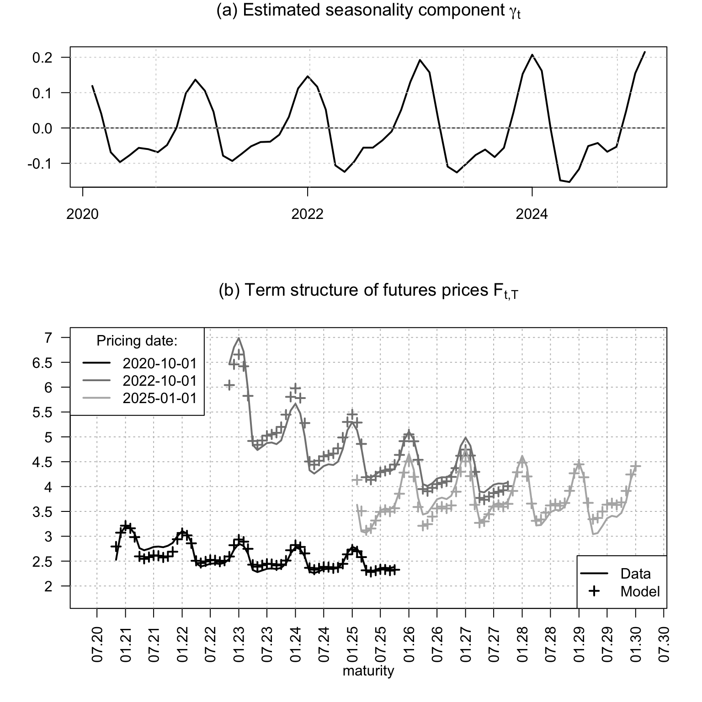

Chapter 8 Forward, futures, dividends, commodity pricing, and convenience yields
8.1 Persistent seasonal factors can generate recurring convenience-yield patterns
This example illustrates how persistent seasonal factors can generate recurring convenience-yield patterns.
# Purpose: This example illustrates how persistent seasonal factors can generate recurring
# convenience-yield patterns
library(DTAM)
ell <- 12
nb_j <- trunc(ell/2)
# Build the trigonometric transition matrix for seasonal cycles.
rho <- rep(.995,nb_j)
# sigma_xi <- rep(.01,nb_j)
sigma_xi <- c(.01,.01,rep(0,nb_j-2))
Theta <- matrix(0,2*nb_j,2*nb_j)
for(j in 1:nb_j){
lambda_j <- 2*pi*j/ell
Theta[(2*(j-1)+1):(2*j),(2*(j-1)+1):(2*j)] <- rho[j] * matrix(c(+cos(lambda_j),
-sin(lambda_j),
+sin(lambda_j),
+cos(lambda_j)),2,2)
}
Omega <- diag(sigma_xi %x% c(1,1))
nb.sim <- 100*ell
start_set <- 92*ell
set.seed(123)
# Simulate the seasonal state vector.
model <- list(Phi = Theta,
mu = matrix(0,2*nb_j,1),
Sigma12 = Omega)
x0 <- matrix(rep(1,2*nb_j),ncol=1)
x0 <- rnorm(n=2*nb_j)
simulated_gamma <- simul_GaussianVAR(model,x0 = x0,nb.sim = nb.sim)
gamma <- simulated_gamma %*% (matrix(1,nb_j,1) %x% matrix(c(1,0),2,1))
# Plot the final part of the simulated seasonal component.
par(mfrow=c(1,1))
par(plt=c(.15,.95,.15,.95))
plot(gamma[(start_set+1):nb.sim],col="white",
type="l",las=1,
xlab="",ylab="")
abline(h=0,col="grey")
lines(gamma[(start_set+1):nb.sim],lwd=2)
grid()
8.2 Observed futures term structures at a few selected dates
This example plots observed futures term structures at a few selected dates.
The futures panel contains NYMEX natural-gas futures settlement prices. The rows are monthly observation dates from January 2010 to January 2025, and the columns are contract-specific settlement-price series for monthly maturities from the February 2010 contract to the December 2030 contract. The data were extracted from licensed Refinitiv/Datastream-style queries: the Refinitiv sheet uses RIC-style futures tickers such as NGG25, while the Datastream sheet uses mnemonics such as NNG0210 and series names of the form NYM-NATURAL GAS FEB 2010 - SETT. PRICE.1
# Purpose: This example plots observed futures term structures at a few selected dates
library(DTAM)
library(stringr)
private_futures_file <- "private_data/Futures.rda"
precomputed_figure <- if (knitr::is_latex_output()) {
"_main_files/figure-latex/fig_futures-1.pdf"
} else {
"figure/fig_futures-1.png"
}
if (!file.exists(private_futures_file) && file.exists(precomputed_figure)) {
knitr::include_graphics(precomputed_figure)
} else {
if (!file.exists(private_futures_file)) {
stop("Private futures data not found: ", private_futures_file, call. = FALSE)
}
load(private_futures_file)
# Extract selected futures curves from the private local data set.
par(plt=c(.15,.95,.15,.95))
futures <- as.matrix(Futures[,2:dim(Futures)[2]])
dates <- c(20,100,150,180)
plot(log(futures[dates[1],]),type="l",ylim=c(0.5,2),
ylab="log(Futures price)",xlab="maturity, in months",lwd=2)
grid()
# Overlay the remaining selected dates.
for(i in 2:length(dates)){
lines(log(futures[dates[i],]),col=i,lwd=2)
}
}
8.3 Gaussian state-space model for commodity futures
This example fits a Gaussian state-space model to commodity futures and compares fitted and observed curves.
# Purpose: This example fits a Gaussian state-space model to commodity futures and compares
# fitted and observed curves
library(DTAM)
library(stringr)
private_futures_file <- "private_data/Futures.rda"
precomputed_figure <- if (knitr::is_latex_output()) {
"_main_files/figure-latex/fig_futures_KF-1.pdf"
} else {
"figure/fig_futures_KF-1.png"
}
if (!file.exists(private_futures_file) && file.exists(precomputed_figure)) {
knitr::include_graphics(precomputed_figure)
} else {
if (!file.exists(private_futures_file)) {
stop("Private futures data not found: ", private_futures_file, call. = FALSE)
}
load(private_futures_file)
# Prepare the panel of futures prices by pricing date and time to maturity.
tickers <- names(Futures)[2:dim(Futures)[2]]
nb_maturities <- length(tickers)
month_letters <- c("JAN","FEB","MAR","APR","MAY","JUN",
"JUL","AUG","SEP","OCT","NOV","DEC")
months_letter_in_ticker <- str_sub(tickers,17,19)
months <- apply(matrix(1:length(months_letter_in_ticker),ncol=1),1,
function(i){which(months_letter_in_ticker[i]==month_letters)})
years <- as.numeric(str_sub(tickers,21,24))
tickers_maturities <- as.Date(paste(years,"-",months,"-01",sep=""))
nb_dates <- 60
N <- dim(Futures)[1]
list_smpl_dates <- sort(Futures$Date[(N-nb_dates+1):N])
max_maturity <- 60 # in months
data <- matrix(NaN,nb_dates,max_maturity)
tempo <- NULL
for(count_date in 1:nb_dates){
ddate <- list_smpl_dates[count_date]
indic_date <- which(Futures$Date==ddate)
for(iii in 1:nb_maturities){
p <- Futures[indic_date,1+iii]
# Compute maturity, in months.
diff_years <- as.numeric(format(as.Date(tickers_maturities[iii]), "%Y")) -
as.numeric(format(ddate, "%Y"))
diff_month <- as.numeric(format(as.Date(tickers_maturities[iii]), "%m")) -
as.numeric(format(ddate, "%m"))
maturity_in_months <- 12*diff_years + diff_month
if((maturity_in_months >= 1)&(maturity_in_months <= max_maturity)){
data[count_date,maturity_in_months] <- p
}
}
}
Y <- log(data)
# Build the Gaussian state-space representation used in the Kalman filter.
make_model <- function(phi,rho,sigma_xi,sigma_mu,sigma_z){
Omega <- diag(sigma_xi %x% c(1,1))
Theta <- matrix(0,2*nb_j,2*nb_j)
for(j in 1:nb_j){
lambda_j <- 2*pi*j/ell
Theta[(2*(j-1)+1):(2*j),(2*(j-1)+1):(2*j)] <- rho[j] * matrix(c(+cos(lambda_j),
-sin(lambda_j),
+sin(lambda_j),
+cos(lambda_j)),2,2)}
Phi <- matrix(0,2+nb_j*2,2+nb_j*2)
Phi[3:(2+nb_j*2),3:(2+nb_j*2)] <- Theta
Phi[1,1] <- 1
Phi[2,2] <- phi
Sigma <- matrix(0,2+nb_j*2,2+nb_j*2)
Sigma[1,1] <- sigma_mu
Sigma[2,2] <- sigma_z
Sigma[3:(2+nb_j*2),3:(2+nb_j*2)] <- Omega
# Pricing formulas:
psi.parameterization <- list(
mu = matrix(0,2+2*nb_j,1),
Phi = Phi,
Sigma12 = Sigma,
Sigma = Sigma %*% t(Sigma))
return(psi.parameterization)
}
estim_model <- function(param){
phi <- exp(param[1])/(1+exp(param[1]))
rho <- exp(param[2:(1+nb_j)])/(1+exp(param[2:(1+nb_j)]))
# sigma_xi <- param[(1+nb_j+1):(1+2*nb_j)]
# sigma_mu <- param[2+2*nb_j]
# sigma_z <- param[3+2*nb_j]
# Pricing formulas:
model <- make_model(phi,rho,sigma_xi,sigma_mu,sigma_z)
# Use the reverse-order multi-horizon transform to price futures across maturities.
h = max_maturity # maximum maturity
u1 <- matrix(c(1,1,rep(c(1,0),nb_j)),ncol=1)
u2 <- 0 * u1
AB <- reverse_MHLT(psi_GaussianVAR,u1,u2,H=h,psi.parameterization=model)
# Define matrices needed in the Kalman_filter procedures:
nu_t <- matrix(0,dim(Y)[1],2+2*nb_j) # intercept in transition equation
H <- model$Phi # autoregressive matrix in transition equation
G <- t(matrix(AB$A,2+2*nb_j,max_maturity)) # matrix of loadings
mu_t <- t(matrix(AB$B,max_maturity,nb_dates))
N <- model$Sigma12 # volatility matrix in transition equation
M <- diag(rep(.1,max_maturity)) # matrix of std dev of measurement errors
Sigma_0 <- 2*diag(2+2*nb_j) # unconditional variance of w
rho_0 <- rep(0,2+2*nb_j) # unconditional mean of w
filter.res <- Kalman_filter(Y,nu_t,H,N,mu_t,G,M,Sigma_0,rho_0)
# smoother.res <- Kalman_smoother(Y,nu_t,H,N,mu_t,G,M,Sigma_0,rho_0)
return(filter.res)
}
loglik <- function(param){
# print(param)
filter.res <- estim_model(param)
return(-filter.res$loglik)
}
# Set model specifications:
ell <- 12
nb_j <- trunc(ell/2)
# Model parameterizaton:
rho <- rep(.995,nb_j)
phi <- .98 # autocorrelation of z
sigma_xi <- rep(0.01,nb_j)
sigma_mu <- .03
sigma_z <- .10
param <- c(log(phi/(1-phi)),log(rho/(1-rho)),sigma_xi,sigma_mu,sigma_z)
# res.optim <- optim(par=param,
# fn=log-likelihood,
# method="Nelder-Mead",
# control=list(trace=FALSE,maxit=50),hessian=FALSE)
# param <- res.optim$par
filter.res <- estim_model(param)
Y_fitted <- filter.res$fitted.obs
# Produce the chart comparing fitted and observed futures curves.
indic_selected_dates <- c(9,33,60)
selected_dates <- list_smpl_dates[indic_selected_dates]
cols <- gray.colors(n=length(indic_selected_dates), start = .0, end = .7)
nf <- layout(
matrix(c(1,2), nrow=2, ncol=1, byrow=TRUE),
widths=c(1,1),
heights=c(1,2)
)
par(plt=c(.1,.95,.2,.8))
# par(mfrow=c(2,1))
# sigma_mu <- sd(diff(filter.res$r[,1]))
# sigma_z <- sd(diff(filter.res$r[,2]))
# plot(list_smpl_dates,filter.res$r[,1],type="l")
# lines(list_smpl_dates,filter.res$r[,2],type="b")
gamma <- filter.res$r[,3:(2+2*nb_j)] %*% matrix(rep(c(1,0),nb_j),ncol=1)
plot(list_smpl_dates,gamma,type="l",lwd=2,las=1,
xlab="",ylab="",
main=expression(paste("(a) Estimated seasonality component ",gamma[t],sep="")))
abline(h=0,col="black")
grid()
plot(tickers_maturities,rep(0,length(tickers_maturities)),
xaxt="n",yaxt="n",las=1,
xlab = "maturity",ylab = "",
ylim=c(-.5 + min(exp(Y[indic_selected_dates,]),na.rm = TRUE),
.0 + max(exp(Y[indic_selected_dates,]),na.rm = TRUE)),
xlim=c(as.Date("2020-06-01"),as.Date("2030-03-01")),
main=expression(paste("(b) Term structure of futures prices ",F[t*','*T],sep="")),
col="white")
xlab <- seq(as.Date("2020-01-01"), by="+6 month", length.out=60)
axis.Date(1, at=xlab, format="%m.%y",las=2)
for(i in 1:length(xlab)){
abline(v=xlab[i],col="grey",lty=3)
}
ylab <- seq(trunc(exp(min(Y[indic_selected_dates,],na.rm = TRUE))),
trunc(exp(max(Y[indic_selected_dates,],na.rm = TRUE))+1),by=.5)
axis(2,at=ylab,labels=ylab,las=1)
for(i in 1:length(ylab)){
abline(h=ylab[i],col="grey",lty=3)
}
count_date <- 0
for(ddate in selected_dates){
count_date <- count_date + 1
ddate <- as.Date(ddate)
indic_date <- which(ddate == list_smpl_dates)
# x-axis
x_axis <- seq(ddate, by="+1 month", length.out=max_maturity+1)
x_axis <- x_axis[2:length(x_axis)]
# y-axis
y_axis_fitted <- exp(Y_fitted[indic_date,])*complete.cases(Y[indic_date,])
y_axis_data <- exp(Y[indic_date,])
points(x_axis,y_axis_fitted,pch=3,col=cols[count_date],lwd=2)
lines(x_axis,y_axis_data,col=cols[count_date],lwd=2)
}
legend("topleft",
title="Pricing date:",
legend=selected_dates,
lwd=c(2),lty=c(1),col=cols,seg.len = 2)
legend("bottomright",
legend=c("Data","Model"),
lwd=c(2),lty=c(1,NaN),col="black",pch=c(NaN,3),seg.len = 2)
}
The underlying settlement-price observations are not distributed with DTAM or with the public version of this Rbookdown project. A public blank extraction workbook, with the observation dates, contract headers, and contract metadata but no price observations, is provided here: data/Futures_extraction_template.xlsx.↩︎